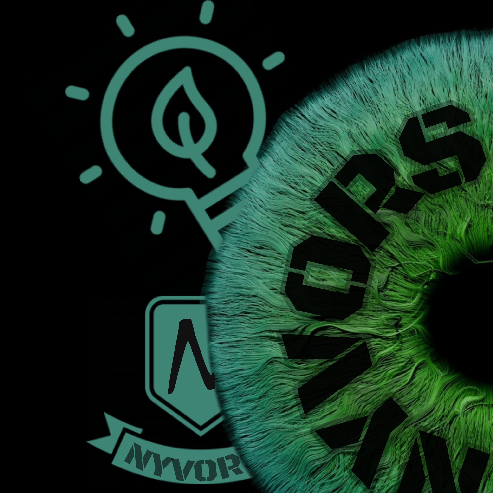

METRO
RED
TRANSIT / ROUTE VISUALIZATION
RED
MetroRed
Un proyecto enfocado en información de transporte y visualización de rutas, pensado para hacer más clara la experiencia de moverse por la ciudad.
Visitar MetroRed ↗DESARROLLO INDEPENDIENTE
Explorando, diseñando y construyendo proyectos digitales con propósito, curiosidad y atención al detalle.
Explorar proyectos ↘
01 / PROYECTOS
Un proyecto enfocado en información de transporte y visualización de rutas, pensado para hacer más clara la experiencia de moverse por la ciudad.
Visitar MetroRed ↗02 / SOBRE NYVORS
NYVORS es una identidad independiente para experimentar con ideas, desarrollar aplicaciones y convertir conceptos en proyectos reales. Este espacio reúne lo que está en proceso y lo que viene.